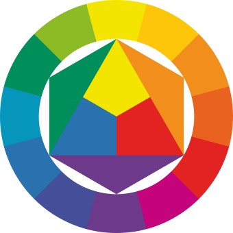

Hellblau
Bedeutung:
Ruhe, Klarheit, Vertrauen
Das Ziel von Farbkontrasten ist es, visuelle Spannung und Aufmerksamkeit zu erzeugen sowie eine klare Differenzierung zwischen Elementen zu schaffen. Farbkontraste helfen dabei, bestimmte Bereiche hervorzuheben, die Lesbarkeit zu verbessern und emotionale Reaktionen zu wecken. Sie werden genutzt, um Harmonie oder Spannung im Design zu erzeugen, die Wahrnehmung zu steuern und die Benutzererfahrung zu optimieren. Durch den gezielten Einsatz von Farbkontrasten kann ein Design sowohl ästhetisch ansprechend als auch funktional sein.
Das Bild der sieben Farbkontraste veranschaulicht die verschiedenen Arten, wie Farben miteinander in Beziehung stehen und visuelle Spannungen erzeugen können. Es zeigt, wie unterschiedliche Farbkombinationen — wie komplementäre, warme und kalte Farben oder hell-dunkel Kontraste — genutzt werden, um ästhetische Effekte zu erzielen. Jeder Kontrasttyp hat eine spezifische Wirkung auf die Wahrnehmung des Betrachters und beeinflusst, wie Farben miteinander harmonieren oder sich gegenseitig verstärken. Dieses Konzept wurde von Johannes Itten entwickelt und dient als Grundlage für viele Design- und Kunstprinzipien.
Die Psychologie der Farben untersucht, wie Farben die Emotionen, Wahrnehmungen und das Verhalten von Menschen beeinflussen. Farben haben tief verwurzelte Bedeutungen und können bestimmte Stimmungen hervorrufen. Zum Beispiel:
Farben werden bewusst in Marketing, Branding und Design eingesetzt, um bestimmte Reaktionen beim Betrachter hervorzurufen und eine gewünschte Atmosphäre zu schaffen.
Diese Farben vermitteln Ruhe, Frieden und Gelassenheit. Perfekt für Inhalte, die eine entspannte Atmosphäre schaffen sollen.
Ruhe, Klarheit, Vertrauen
Natur, Erneuerung, Entspannung
Neutralität, Sanftheit
Ausgleich, Kreativität, Harmonie
Diese Palette ist fröhlich, verspielt und eignet sich für kreative, jugendliche oder verspielte Projekte.
Kreativität, Energie, Verspieltheit
Originalität, Inspiration, Fantasie
Freundlichkeit, Freude, Begeisterung
Frische, Modernität, Offeneheit
Farbkontraste spielen eine entscheidende Rolle für die Benutzerfreundlichkeit und Barrierefreiheit von Websites. Ein ausreichender Kontrast zwischen Text und Hintergrund sorgt dafür, dass Inhalte für alle Nutzer gut lesbar sind, einschließlich Menschen mit Sehbehinderungen, wie Farbsehschwächen oder altersbedingten Einschränkungen.
Weißer Text auf einem hellgrauen Hintergrund ist schwer zu lesen. Stattdessen könnte man schwarzen oder dunkelgrauen Text verwenden, um den Kontrast zu erhöhen.
Ein blauer Text auf rotem Hintergrund mag ästhetisch interessant wirken, ist jedoch für Personen mit Rot-Grün-Sehschwäche kaum unterscheidbar. Eine Alternative wäre dunkelblauer Text auf einem weißen Hintergrund.